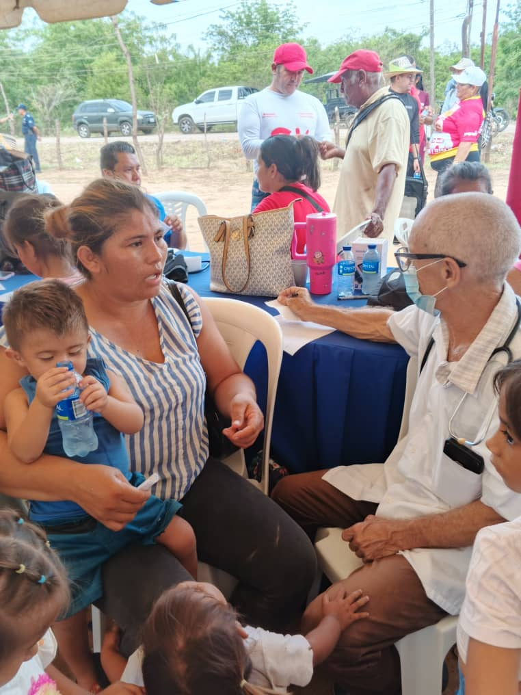
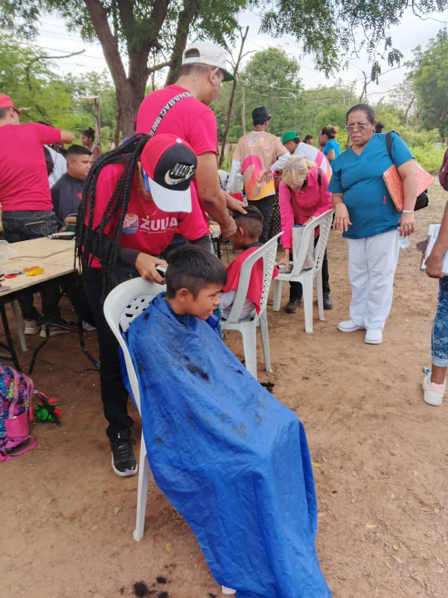
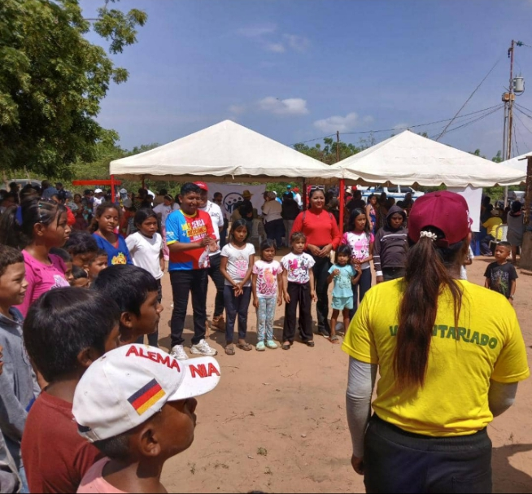

Departamento de Trabajo Social
Transformando realidades, construyendo comunidad.
Función del Departamento
Realizar diagnósticos sociales y planificar intervenciones para atender a individuos, familias y comunidades en situación de vulnerabilidad, gestionando recursos y programas que promuevan la equidad, la justicia social y el desarrollo humano integral.
Galería de Fotos


